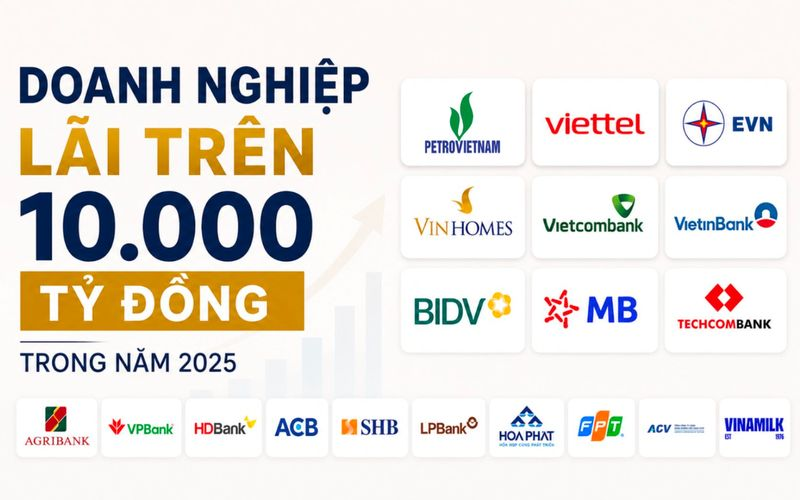
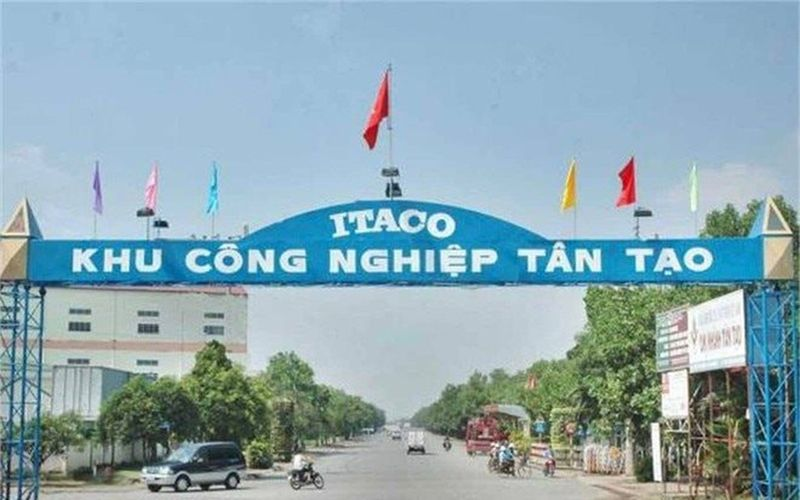
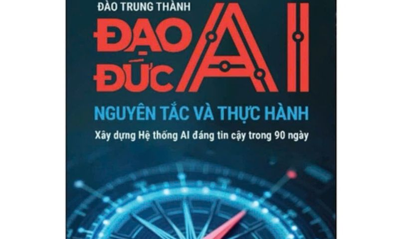
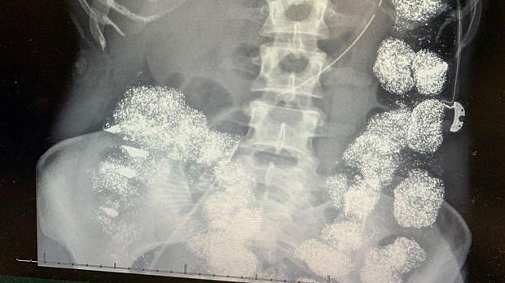

TongHopTin
Tong hop tin tuc - 2026-06-10

CLB doanh nghiệp Việt lãi vạn tỷ: Vinhomes lẻ loi giữa dàn doanh nghiệp Nhà nước ở top đầu, 12 đơn vị đạt cột mốc tỷ đô 🔗 MOI
TIN MỚI Năm 2025 ghi nhận ít nhất 26 doanh nghiệp có lợi nhuận trước thuế từ 10.000 tỷ đồng trở lên. Danh sách trải rộng trên nhiều lĩnh vực như năng lượng, viễn thông, ngân hàng, bất động sản, công n

Chủ tịch một doanh nghiệp trên sàn thắng kiện 72 triệu USD 🔗 MOI
ITA: Giá hiện tại Thay đổi Xem hồ sơ doanh nghiệp TIN MỚI Công ty Cổ phần Đầu tư và Công nghiệp Tân Tạo (mã chứng khoán: ITA) vừa công bố thông tin bất thường về phán quyết cuối cùng của Tòa án Quận L

Phát huy vai trò chủ đạo của kinh tế nhà nước trong kỷ nguyên mới 🔗 MOI
Kinh tế Thay vì dựa trên quy mô sở hữu, bài viết phân tích vai trò của kinh tế nhà nước trong nền kinh tế Việt Nam theo cách tiếp cận chức năng: ổn định kinh tế vĩ mô, định hướng phát triển và thiết l
Ông Trump: Iran bắn rơi trực thăng Apache, Mỹ phải đáp trả 🔗 MOI
"Tôi vừa được quân đội vĩ đại của chúng ta thông báo rằng, đêm qua, Iran đã bắn hạ một trong những trực thăng Apache tối tân của Mỹ đang làm nhiệm vụ tuần tra trên eo biển Hormuz", Tổng thống Donald T

Đổi mới mô hình tăng trưởng gắn với tái cơ cấu nền kinh tế trong giai đoạn mới 🔗 MOI
Pháp luật Triển khai Nghị quyết số 07-NQ/TW ngày 18/11/2016 của Bộ Chính trị về chủ trương, giải pháp cơ cấu lại ngân sách nhà nước, quản lý nợ công, việc cơ cấu lại ngân sách nhà nước, quản lý nợ côn

Tiếp nhận phản ánh kiến nghị của doanh nghiệp 🔗 MOI
HỌ VÀ TÊN * EMAIL * SỐ ĐIỆN THOẠI * ĐỊA CHỈ * TIÊU ĐỀ * FILES ĐÍNH KÈM NỘI DUNG * RadEditor - HTML WYSIWYG Editor. MS Word-like content editing experience thanks to a rich set of formatting tools, dro
6 phương án mở rộng cầu Nhơn Trạch nối TP HCM - Đồng Nai 🔗 MOI
Các phương án vừa được Ban Quản lý dự án Mỹ Thuận gửi Bộ Xây dựng khi nghiên cứu đầu tư giai đoạn hai dự án thành phần 1A, thuộc Vành đai 3 TP HCM. Dự án thành phần này dài 8,7 km, nối tỉnh lộ 25B (Đồ

Khơi thông các động lực tăng trưởng kinh tế Việt Nam 🔗 MOI
Pháp luật Nhờ sự phối hợp đồng bộ của chính sách tài khóa và tiền tệ trong việc thúc đẩy cầu trong nước, kinh tế Việt Nam năm 2025 phục hồi mạnh, với tăng trưởng vượt mục tiêu đề ra. Về ổn định kinh t
Giá vàng thế giới bất ngờ giảm mạnh giữa đêm, vàng trong nước sáng nay ra ra sao? 🔗 MOI
Giá vàng thế giới giảm mạnh về sát 4.200 USD/ounce - Ảnh chụp màn hình Giá vàng thế giới giảm tương đương 15 triệu đồng/lượng trong vòng 1 tháng Với mức giá này, giá vàng thế giới đã giảm đến 71,2 USD
Vùng Vịnh tìm cách thoát phụ thuộc eo biển Hormuz 🔗 MOI
Trong nhiều thập kỷ, bản đồ xuất khẩu năng lượng của vùng Vịnh hội tụ tại điểm nghẽn duy nhất: eo biển Hormuz. Giờ đây, cuộc chiến Iran đã thúc đẩy các nước tìm cách thoát phụ thuộc, bằng cách đổ hàng
Đại học top đầu Mỹ rúng động vì sinh viên trượt môn hàng loạt 🔗 MOI
Theo dữ liệu từ nền tảng thống kê Berkeleytime , tỷ lệ sinh viên Đại học California, Berkeley (UCB) nhận điểm F ở hai môn Khoa học máy tính là CS 10 và CS 61A lần lượt là 35,3% và 10,6%, tăng vọt so v
World Cup 2026 dự kiến tạo ra 41 tỷ USD 🔗 MOI
Báo cáo do bộ phận quản lý tài sản của UBS thực hiện, tập trung vào sự phát triển của ngành công nghiệp bóng đá những năm qua. Giải đấu khởi tranh ngày 11/6 được dự báo sẽ trở thành sự kiện thể thao c

Kiến tạo không gian phát triển mới cho kinh tế tập thể 🔗 MOI
Pháp luật Trong giai đoạn 2021-2025, dựa vào mục tiêu phát triển, điều kiện ngân sách và nhu cầu hỗ trợ, năng lực của các hợp tác xã, Thủ tướng Chính phủ đã ban hành Chương trình hỗ trợ phát triển kin

Nhìn lại 1 năm thực thi Nghị quyết 68-NQ/TW 🔗 MOI
Doanh nghiệp Sau 1 năm triển khai Nghị quyết số 68-NQ/TW, nhiều doanh nghiệp công nghệ Việt ghi nhận những chuyển biến tích cực từ môi trường kinh doanh, cơ chế hỗ trợ và tư duy điều hành theo hướng k
Tạp chí Kinh tế Sài Gòn 🔗 MOI
Kinh tế Sài Gòn giữ bản quyền nội dung của trang web thesaigontimes.vn. Không sử dụng lại nội dung trên trang này dưới mọi hình thức, trừ khi được Kinh tế Sài Gòn đồng ý bằng văn bản. Trang ngoài sẽ đ
Tạp chí Kinh tế Sài Gòn 🔗 MOI
Kinh tế Sài Gòn giữ bản quyền nội dung của trang web thesaigontimes.vn. Không sử dụng lại nội dung trên trang này dưới mọi hình thức, trừ khi được Kinh tế Sài Gòn đồng ý bằng văn bản. Trang ngoài sẽ đ
Tạp chí Kinh tế Sài Gòn 🔗 MOI
Kinh tế Sài Gòn giữ bản quyền nội dung của trang web thesaigontimes.vn. Không sử dụng lại nội dung trên trang này dưới mọi hình thức, trừ khi được Kinh tế Sài Gòn đồng ý bằng văn bản. Trang ngoài sẽ đ

Khu Công nghiệp, Khu Kinh tế 🔗 MOI
Bộ Tài chính đã và đang nỗ lực không ngừng để cải cách thủ tục hành chính, bảo đảm các lĩnh vực thuộc phạm vi quản lý nhà nước của Bộ Tài chính luôn thông suốt theo mô hình chính quyền địa phương 2 cấ
Tạp chí Kinh tế Sài Gòn 🔗 MOI
Kinh tế Sài Gòn giữ bản quyền nội dung của trang web thesaigontimes.vn. Không sử dụng lại nội dung trên trang này dưới mọi hình thức, trừ khi được Kinh tế Sài Gòn đồng ý bằng văn bản. Trang ngoài sẽ đ
Iran - Israel dừng tấn công lẫn nhau 🔗 MOI
Tổng thống Mỹ Donald Trump hôm qua 9.6 cho hay các nhà đàm phán đang ở "giai đoạn cuối" của các cuộc đàm phán về một thỏa thuận hòa bình ở Trung Đông, sau khi Iran và Israel ngừng các hành động thù đị
22,3 tỷ đơn hàng thương mại điện tử tại Đông Nam Á: 60% được giao bởi 3 ông lớn logistics, SPX được hậu thuẫn bởi Shopee vẫn chỉ đứng 2 🔗 MOI
TIN MỚI Theo báo cáo Momentum Works’ Ecommerce 2026, thị trường logistics phục vụ thương mại điện tử tại Đông Nam Á tiếp tục mở rộng trong giai đoạn 2022–2025. Tổng khối lượng bưu kiện giao nhận trong

Chuyên đề Agribank 🔗 MOI
Trước áp lực thực thi Nghị định số 70/2025/NĐ-CP về hóa đơn điện tử và quản lý thuế, Agribank tổ chức hội nghị tập huấn toàn quốc, thống nhất quy trình hỗ trợ và giới thiệu gói giải pháp số dành riêng

TỔNG QUAN TỔNG QUAN KINH TẾ 🔗 MOI
Kinh tế Hoạt động điều hành chính sách tài khóa năm 2025 diễn ra trong bối cảnh tình hình kinh tế trong nước và quốc tế tiếp tục diễn biến phức tạp, căng thẳng thương mại toàn cầu gia tăng, đặc biệt l

Tiếp nhận phản ánh kiến nghị của công dân 🔗 MOI
HỌ VÀ TÊN * EMAIL * SỐ ĐIỆN THOẠI * ĐỊA CHỈ * TIÊU ĐỀ * FILES ĐÍNH KÈM NỘI DUNG * RadEditor - HTML WYSIWYG Editor. MS Word-like content editing experience thanks to a rich set of formatting tools, dro

Ấn phẩm 🔗 MOI
Tạp chí Kinh tế - Tài chính Online. Cơ quan chủ quản: Bộ Tài chính Giấy phép xuất bản số: 107/GP-BVHTTDL ngày 26/8/2025. Tạp chí Kinh tế - Tài chính Online: e-ISSN 3093-3498.

Chính phủ với doanh nghiệp 🔗 MOI
20/03/2026 (Chinhphu.vn) - Chính phủ ban hành Nghị quyết số 11/2026/NQ-CP về chi phí tiền lương Ngân hàng thương mại TNHH một thành viên Xây dựng Việt Nam, Ngân... 04/03/2026 (Chinhphu.vn) - Chính phủ
Ấn Độ và Oman giải cứu thủy thủ đoàn của tàu hàng bị Mỹ tấn công 🔗 MOI
Video: Lực lượng Tuần duyên Ấn Độ Thông cáo trên mạng xã hội X của Lực lượng Tuần duyên Ấn Độ chiều 9/6 cho biết: “Sau khi nhận được tin báo về việc tàu M/T Marivex bị tấn công bằng tên lửa, Trung tâm

'Đạo đức AI' 🔗 MOI
Cuốn sách tập trung tìm hiểu câu hỏi: ''Ai sẽ chịu trách nhiệm khi trí tuệ nhân tạo (AI) đưa ra quyết định sai?''. Ấn phẩm hệ thống hóa những nguyên tắc, công cụ và phương pháp giúp tổ chức quản trị A
Láng giềng của Việt Nam chi hơn 11 tỷ USD xây siêu công trình "quy mô chưa từng có" tại đập Tam Hiệp 🔗 MOI
TIN MỚI Theo Xinhua, ngày 8/6 vừa qua, Trung Quốc đã chính thức khởi công dự án đường thủy mới Tam Hiệp, trong đó bao gồm hạng mục được kỳ vọng sẽ trở thành âu tàu nội địa lớn nhất thế giới. Dự án này
Những công trình làm thay đổi diện mạo Quảng Ninh 🔗 MOI
Nối hai bờ vịnh Cửa Lục (TP Hạ Long cũ), cầu Bãi Cháy được khởi công ngày 18/5/2003, khánh thành ngày 2/12/2006, là cầu dây văng bêtông cốt thép dự ứng lực một mặt phẳng dây với độ dài nhịp chính 435
Lịch thi đấu World Cup 2026 đầy đủ: Những trận cầu rực lửa ở Bắc Mỹ, xem giờ nào tại Việt Nam? 🔗 MOI
Chủ nhà Mexico khai màn World Cup 2026, Brazil gặp thử thách lớn World Cup 2026 sẽ mở màn bằng cuộc đối đầu giữa đội tuyển Mexico và Nam Phi lúc 2 giờ ngày 12.6 (giờ Việt Nam) trên sân Azteca huyền th

Trẻ sinh ra di truyền giang mai từ mẹ có điều trị được không? 🔗 MOI

Kiểm soát lạm phát trước những "biến số" cuối năm 🔗 MOI
Tài chính Tại Nghị quyết số 86/NQ-CP ngày 4/11/2025 về triển khai nhiệm vụ trọng tâm những tháng cuối năm 2025, Chính phủ tiếp tục yêu cầu về kiểm soát lạm phát, giữ vững ổn định kinh tế vĩ mô. Trong

Huy động tài chính xanh hướng tới mục tiêu phát triển bền vững 🔗 MOI
Pháp luật Chuyển đổi năng lượng xanh đã trở thành xu thế toàn cầu mang tính bắt buộc, gắn liền với mục tiêu Net Zero và yêu cầu cạnh tranh trong chuỗi cung ứng quốc tế. Trong bối cảnh đó, doanh nghiệp

Tạp chí Kinh tế Tài chính kỳ 3 tháng 4/2026 🔗 MOI

Điều hành giá cả thị trường, kiểm soát lạm phát năm 2026 🔗 MOI
Pháp luật Chính sách tiền tệ và chính sách tài khóa là hai công cụ quản lý kinh tế vĩ mô quan trọng của các quốc gia. Mỗi một chính sách đều có mục tiêu riêng nhưng chung quy lại đều cùng theo đuổi mụ
Tạp chí Kinh tế Tài chính kỳ 1 tháng 5/2026 🔗 MOI

Tạp chí Kinh tế Tài chính kỳ 2 tháng 5/2026 🔗 MOI

Kỷ niệm 51 năm Ngày Giải phóng miền Nam, thống nhất đất nước: Tự chủ chiến lược, kiến tạo thịnh vượng 🔗 MOI
Kinh tế Trong bối cảnh cạnh tranh thu hút đầu tư công nghệ ngày càng quyết liệt, Việt Nam đang chủ động mở cánh cửa ra thế giới để đón các “đại bàng công nghệ”, coi đây là động lực quan trọng để chuyể

Nước CHXHCN Việt Nam 🔗 MOI
© Cổng Thông tin điện tử Chính phủ Tổng Giám đốc: Nguyễn Hồng Sâm Trụ sở: 16 Lê Hồng Phong - Ba Đình - Hà Nội. Điện thoại: Văn phòng: 080 43162; Fax: 080.48924 Email: thongtinchinhphu@chinhphu.vn Bản
Quốc đảo giàu có nào ở châu Á không có sông tự nhiên? 🔗 MOI
1. Quốc gia nào sau đây được biết đến là một quốc đảo giàu có ở châu Á nhưng không có sông tự nhiên? Nhật Bản 0% Bahrain 0% Indonesia 0% Singapore 0% Chính xác Bahrain là một quốc đảo nằm trong Vịnh B
Thế giới đang đổi khác, khu vực ASEAN phải nghĩ khác 🔗 MOI
Một buổi sáng ở bất kỳ thành phố nào của Đông Nam Á hôm nay, ta có thể bắt gặp rất nhiều hình ảnh tưởng như nhỏ bé nhưng lại nói được nhiều điều về thời đại. Một bạn trẻ ở Hà Nội đặt món ăn qua ứng dụ
100 ngày xung đột Mỹ-Iran: Bàn cờ quyền lực Trung Đông đang thay đổi ra sao? 🔗 MOI
Tròn 100 ngày kể từ khi Mỹ và Israel phát động chiến dịch quân sự nhằm vào Iran, những mục tiêu chiến lược ban đầu vẫn đối mặt nhiều thách thức. Trong khi Tehran duy trì năng lực đáp trả, các lực lượn
SGI Capital: Cơ hội lớn nhất trên thị trường chưa lộ diện vì điều này 🔗 MOI
TIN MỚI Hiệu ứng "domino" từ tiền số đang lan rộng Trong báo cáo mới đây, SGI Capital cho rằng tâm lý lạc quan mang tính FOMO trong thời gian qua đang khiến dòng tiền cá nhân chi phối mạnh tại nhiều t

Huy động nguồn lực cho tăng trưởng xanh 🔗 MOI
Pháp luật Bài viết phân tích tiềm năng, thực trạng và định hướng phát triển các mô hình du lịch biển tại Việt Nam nhằm hướng tới một nền kinh tế biển xanh, bền vững. Với đường bờ biển dài hơn 3.260 km
Đề xuất truyền dữ liệu camera ô tô kinh doanh về Cục CSGT theo thời gian thực 🔗 MOI
Vừa qua, Bộ Công an đã công bố dự thảo lần 2 Nghị định quy định về thiết bị giám sát hành trình, thiết bị ghi nhận hình ảnh người lái xe, thiết bị ghi nhận hình ảnh khoang chở khách trên phương tiện g
Nữ đại gia ngành giáo dục gom thêm 102 triệu cổ phiếu ACB chỉ trong 2 tháng, nắm giữ danh mục trị giá gần 10.000 tỷ đồng 🔗 MOI
ACB&ALC: Giá hiện tại Thay đổi Xem hồ sơ doanh nghiệp TIN MỚI Ngày 26/3, nhóm cổ đông liên quan bà Ngô Thu Thúy lần đầu công bố trở thành nhóm cổ đông lớn của Ngân hàng ACB với tổng lượng nắm giữ đạt
'Lao động không chịu nổi nếu thuê nhà vượt 25% thu nhập' 🔗 MOI
Ý kiến được ông Lê Hoàng Châu, Chủ tịch Hiệp hội Bất động sản TP HCM (HoREA), đưa ra tại hội nghị Triển khai và xúc tiến đầu tư phát triển nhà ở cho thuê trên địa bàn, chiều 9/6. "Chi phí thuê nhà hiệ

Xoắn dây tinh và thời gian vàng cấp cứu 🔗 MOI

Bộ Tài chính đồng hành cùng doanh nghiệp nhỏ và vừa trên hành trình chuyển đổi kép 🔗 MOI
Chuyển đổi số Trong bối cảnh tiêu chuẩn ESG, yêu cầu Net Zero và sức ép cạnh tranh toàn cầu ngày càng gia tăng, phần lớn doanh nghiệp Việt Nam, đặc biệt là doanh nghiệp nhỏ và vừa đang đối mặt với kho

Báo cáo tài chính doanh nghiệp 🔗 MOI
Tổng tài sản của VNPT đến cuối năm 2025 đạt 119.610,3 tỷ đồng, tăng gần 6%. Trong đó, hàng tồn kho tăng hơn 3 lần lên 4.711,4 tỷ đồng, chủ yếu do nguyên liệu, vật liệu và chi phí sản xuất kinh doanh d
Ngày hè không điện thoại của chiến sĩ 'nhí' Đà Nẵng 🔗 MOI
Sáng sớm, Trung tâm Giáo dục Quốc phòng và An ninh - Trường Quân sự Quân khu 5 (TP. Đà Nẵng) đã rộn ràng tiếng bước chân và khẩu lệnh. Khi tiếng kẻng báo thức vang lên, 172 chiến sĩ “nhí” nhanh chón
Tom Cruise sắp trở lại với dự án điện ảnh hoành tráng nhất trong sự nghiệp 🔗 MOI
Năm 2022, Top Gun: Maverick đã tạo nên cơn sốt phòng vé toàn cầu và được xem là một trong những phần hậu truyện thành công nhất lịch sử điện ảnh. Dù bộ phim Top Gun ra mắt năm 1986 từng là hiện tượng
5 'cạm bẫy' khi dùng thực phẩm chức năng gây hại thận 🔗 MOI
Nhiều người có ý thức chăm sóc sức khỏe thường sở hữu những tủ thuốc gia đình chất đầy các loại thực phẩm chức năng (TPCN) ngoại nhập. Tuy nhiên, thứ bạn đang đưa vào cơ thể chưa chắc là sức khỏe, mà
Mỹ nhân gợi cảm nhất World Cup 2022 rẽ hướng làm DJ 🔗 MOI
Ivana Knoll tại sân vận động Al Bayt (trái) và khi mặc đồ bơi đi trên đường phố Qatar tại World Cup 2022. Ảnh: Instagram / knolldoll Ivana, 33 tuổi, từng xuất hiện trong tất cả trận đấu của đội tuyển

Màn kịch của kẻ đầu độc vợ bằng 'lượng chì khổng lồ' 🔗 MOI
Tháng 1/2022, cơn đau hành hạ Hannah Pettey, 22 tuổi, suốt sáu tháng qua trở nên dữ dội hơn bao giờ hết. Trước đó, cô đã phải nằm liệt giường một tuần liền, không thể chăm sóc cho hai đứa con 2 và 3 t
Người lao động trực điện thoại sau giờ làm việc, tính tiền thế nào? 🔗 MOI
Tôi muốn hỏi, đối với khoảng thời gian trực điện thoại ngoài giờ này thì công ty có trách nhiệm trả tiền lương hoặc phụ cấp như thế nào theo quy định của pháp luật? Trường hợp chỉ trực chờ nhưng không

Hiểu đúng thí điểm vùng phát thải thấp từ 1-7: Không cấm hết xe máy xăng như lời đồn 🔗 MOI
Chi tiết khu vực dự kiến thí điểm vùng phát thải thấp tại Hà Nội từ ngày 1-7-2026 - Ảnh: VTV Từ ngày 1-7, Hà Nội bắt đầu triển khai thí điểm vùng phát thải thấp (Low Emission Zone - LEZ) tại 9 phường

quản lý ngân sách hiệu quả, phục vụ chính quyền địa phương 2 cấp 🔗 MOI
Tài chính Không chỉ tinh gọn, sắp xếp bộ máy và kịp thời tham mưu, ban hành, triển khai các văn bản hướng dẫn về kế toán phục vụ mô hình chính quyền địa phương 2 cấp, tham gia các đoàn công tác cùng B
Tổng Bí thư, Chủ tịch nước Tô Lâm: Cơ hội chỉ trở thành lợi thế khi ASEAN đủ năng lực nắm bắt 🔗 MOI
Tổng Bí thư, Chủ tịch nước Tô Lâm phát biểu tại cuộc tiếp trưởng các đoàn tham dự AFF 2026 ngày 9-6 - Ảnh: TTXVN Tuổi Trẻ Online trân trọng giới thiệu phát biểu của Tổng Bí thư, Chủ tịch nước Tô Lâm t
Thắng Timor-Leste, U19 Việt Nam ra quân thuận lợi tại Giải U19 Đông Nam Á 🔗 MOI
Cú hattrick của Hoàng Công Hậu giúp U19 Việt Nam giành thắng lợi với tỷ số 3-0 ở trận ra quân Giải U19 Đông Nam Á 2026 gặp U19 Timor-Leste. U19 Việt Nam bước vào trận gặp Timor-Leste trên sân Sumatera

nhà đất công đôi dư 🔗 MOI
Tài chính Đằng sau hàng chục nghìn cơ sở nhà, đất công chưa được xử lý dứt điểm không chỉ là câu chuyện thủ tục hay hồ sơ pháp lý, mà còn là tâm lý e ngại trách nhiệm trong quá trình thực thi. Mệnh lệ

Góc chuyên gia & nhà quản lý 🔗 MOI
Bộ Tài chính đã và đang nỗ lực không ngừng để cải cách thủ tục hành chính, bảo đảm các lĩnh vực thuộc phạm vi quản lý nhà nước của Bộ Tài chính luôn thông suốt theo mô hình chính quyền địa phương 2 cấ

Đổi mới công tác xây dựng và thi hành pháp luật: Dấu ấn 1 năm thực hiện Nghị quyết số 66-NQ/TW 🔗 MOI
Tài chính Trong tiến trình phát triển đất nước, cải cách thể chế luôn được xác định là khâu đột phá để khơi thông nguồn lực và nâng cao năng lực cạnh tranh quốc gia. Trên nền tảng những chuyển động mạ

Hoạt động của Lãnh đạo Bộ Tài chính 🔗 MOI
Bộ Tài chính đã và đang nỗ lực không ngừng để cải cách thủ tục hành chính, bảo đảm các lĩnh vực thuộc phạm vi quản lý nhà nước của Bộ Tài chính luôn thông suốt theo mô hình chính quyền địa phương 2 cấ

Chỉ đạo, quyết định của Chính phủ - Thủ tướng Chính phủ 🔗 MOI
09/06/2026 (Chinhphu.vn) - Thủ tướng Chính phủ Lê Minh Hưng vừa ký Quyết định số 1034/QĐ-TTg ngày 09/6/2026 về việc bổ sung thành viên Ban Chỉ đạo của Chính phủ... 09/06/2026 (Chinhphu.vn) - Phó Thủ t
Lạnh giữa tháng 6, El Nino trở lại: Thời tiết bắt đầu 'loạn nhịp'? 🔗 MOI
Không khí lạnh giữa hè, hiếm gặp sau 12 năm Tháng 6 thường là giai đoạn nắng nóng diễn ra gay gắt ở miền Bắc và Trung Bộ. Nhưng năm nay, xen kẽ giữa những đợt nắng gay gắt với nhiệt độ nhiều nơi vượt
🔗 MOI
Lời tòa soạn: Nhiều thập kỷ qua, hạ tầng Cao Bằng mắc kẹt trong thế '4 không' (không sân bay, không đường sắt, không cảng biển và không cao tốc). Dự án cao tốc Đồng Đăng - Trà Lĩnh được triển khai đón

🔗 MOI
Chia sẻ với VietNamNet , cô Lâm Hương (hệ thống giáo dục Học Mãi) cho biết thời điểm này không còn là lúc để học sinh “lao vào học bằng mọi giá”. Càng sát ngày thi, điều quan trọng không chỉ là kiến t
Lịch âm hôm nay ngày Đường Phong: Dân gian quan niệm là ngày đẹp để xuất hành 🔗 MOI
Dương lịch hôm nay là thứ tư, đánh dấu năm 2026 trải qua ngày thứ 159. Theo lịch âm hôm nay 10.6 là ngày 25 tháng 4, theo cách gọi can chi là ngày Ất Mão, tháng Quý Tỵ, năm Bính Ngọ. Lịch âm hôm nay 1
Trung - Triều cam kết phát huy tình hữu nghị 🔗 MOI
Trong ngày thứ 2 thăm Bình Nhưỡng, ông Tập Cận Bình cùng phu nhân Bành Lệ Viện đến viếng Tháp hữu nghị Trung - Triều, trước sự chứng kiến của ông Kim và phu nhân Ri Sol-ju. Ông Tập và ông Kim nhất trí
Cái kết viên mãn chờ Messi và Argentina ở World Cup 2026 🔗 MOI
M ESSI CHƯA MUỐN DỪNG LẠI Lionel Messi đã khép lại World Cup 2022 cách đây 4 năm với chức vô địch đậm tính sử thi. Anh cùng Argentina thua 1-2 trước Ả Rập Xê Út trong trận ra quân, chật vật hạ Mexico
Tiền vệ gốc Việt muốn đánh bại Messi ở World Cup 🔗 MOI
Khi tuyển Algeria đặt chân đến Mỹ để chuẩn bị cho World Cup 2026 , Maza không né tránh áp lực trước trận mở màn gặp đương kim vô địch Argentina. "Chúng tôi cần có một kỳ World Cup tốt và trận đầu tiên

Google Finance tích hợp AI: Người dùng phổ thông cũng có thể đầu tư như chuyên gia 🔗 MOI
Nhà đầu tư nghiệp dư vẫn có thể hiểu thị trường nhờ công cụ AI mới của Google. Google đang thử nghiệm phiên bản Google Finance tích hợp trí tuệ nhân tạo (AI) tại Israel, đánh dấu bước đi mới trong tha
Bộ Xây dựng quyết tâm thực hiện thắng lợi các mục tiêu tăng trưởng năm 2026 🔗 MOI
Báo cáo tại hội nghị cho thấy, trong tháng 5/2026, dưới sự chỉ đạo quyết liệt của lãnh đạo Bộ, ngành xây dựng đã triển khai đồng bộ, hiệu quả các nhiệm vụ theo chương trình công tác của Chính phủ và T

Chủ xe hybrid sạc điện bị chỉ trích 'không sạch' vì lười cắm điện, Toyota cho thấy điều ngược lại 🔗 MOI
Hóa ra chủ xe PHEV không lười cắm sạc, mà phụ thuộc vào việc họ sống ở đâu và sở hữu xe dưới hình thức nào - Ảnh: Toyota Trong nhiều năm qua, xe hybrid sạc điện (PHEV) thường bị hoài nghi về hiệu quả

Công cụ AI liên quan Anthropic tự ý xóa sạch dữ liệu của một doanh nghiệp trong 9 giây 🔗 MOI
Hành động phá hoại của công cụ lập trình AI đã khiến khách hàng của Công ty PocketOS rơi vào tình thế khó khăn - Ảnh TED HSU Báo Guardian đưa tin một công cụ lập trình vận hành bằng trí tuệ nhân tạo (
Năng lượng & Khoáng sản 🔗 MOI
Trong số 96 dự án thu hút đầu tư năm 2026, có 21 dự án thuộc lĩnh vực năng lượng, 20 dự án về nhà ở, khu công nghiệp, 15 dự án hạ tầng khu, cụm công nghiệp...
Chân dung doanh nghiệp 🔗 MOI
Không chỉ đánh dấu sự xuất hiện của ông Trịnh Văn Quyết, ĐHĐCĐ của FLC còn gây chú ý với kế hoạch đưa cổ phiếu trở lại giao dịch, tái cấu trúc.
Ngoài 20 tuổi đã 'bất lực' 🔗 MOI
Nam nhân viên văn phòng 29 tuổi đến khám nam khoa sau nhiều tháng mất ngủ liên tục, giảm ham muốn và khó duy trì cương khi quan hệ. Các xét nghiệm nội tiết ban đầu không ghi nhận bất thường rõ rệt. Tu
Tuổi trẻ Đắk Lắk bảo vệ môi trường, chuyển giao khoa học kỹ thuật 🔗 MOI
Ngày 9/6, tại xã Ea Wer, Ban thường vụ Tỉnh Đoàn Đắk Lắk tổ chức Lễ ra quân Chiến dịch thanh niên tình nguyện hè năm 2026, với sự tham dự của hơn 500 đoàn viên, hội viên thanh niên trên địa bàn tỉnh.
Nghiên cứu mới chỉ ra thời điểm ăn sáng và ăn tối tốt cho đường huyết 🔗 MOI
Thời điểm ăn uống từ lâu được xem là một yếu tố quan trọng đối với sức khỏe chuyển hóa, bao gồm cả mức đường huyết . Vậy đâu là thời điểm ăn tốt nhất cho lượng đường trong máu, đặc biệt là bữa sáng và
Nghệ sĩ Bùi Bài Bình về hưu vẫn miệt mài đóng phim 🔗 MOI
Ông đang quay series Dưới ô cửa sáng đèn, đóng cùng bạn diễn Chí Trung, Quang Sự. Trong phim, nghệ sĩ vào vai một ông bố tận tụy, thương con, sẵn sàng dùng hết tiền dưỡng già để giúp đỡ khi con gặp kh
Đoàn Thanh niên Chính phủ ra quân chiến dịch tình nguyện hè tại Lạng Sơn 🔗 MOI
Ngày 9/6, Đoàn Thanh niên Chính phủ phối hợp cùng Bộ Chỉ huy Quân sự (CHQS) tỉnh và Tỉnh Đoàn Lạng Sơn phối hợp tổ chức Lễ phát động Chiến dịch Thanh niên tình nguyện Hè năm 2026 và triển khai công
Bí mật trong từng bước chân của người lớn tuổi vừa được khoa học giải mã 🔗 MOI
Vì sao người lớn tuổi đi bộ chậm và nhanh mệt hơn? Tuy nhiên, việc đi bộ ở người lớn tuổi khác biệt nhiều so với ở người trẻ. Nghiên cứu mới vừa được công bố trên tạp chí khoa học Gait & Posture , đã
Trương Gia Huy hé lộ bí mật phía sau hành trình theo đuổi Quan Vịnh Hà 🔗 MOI
Mới đây, nam diễn viên Trương Gia Huy đã có cuộc trò chuyện với người bạn thân lâu năm Ngô Đại Duy và lần đầu kể lại chi tiết quá trình theo đuổi Quan Vịnh Hà, người bạn đời gắn bó với anh suốt hơn ha
Ăn nhiều rau vẫn thiếu chất: 4 nguyên nhân làm giảm hấp thu dinh dưỡng 🔗 MOI
Ăn nhiều rau nhưng vẫn thiếu chất là tình trạng không hiếm gặp. Nguyên nhân thường là do các vấn đề sau: Không đa dạng thực phẩm Rau xanh rất giàu vitamin C, folate, kali, carotenoid và chất xơ . Tuy
TV3 kinh doanh ra sao trước khi Chủ tịch cùng 2 lãnh đạo bị khởi tố? 🔗 MOI
TIN MỚI Ông Nguyễn Như Hoàng Tuấn (ảnh: PECC3) Thêm 3 lãnh đạo ngành điện bị khởi tố Ngành điện tiếp tục ghi nhận thông tin không mấy tích cực khi CTCP Tư vấn Xây dựng Điện 3 (mã: TV3) vừa phát đi thô
Chồng cũ Triệu Vy bị xét xử vì vay nợ chơi cờ bạc 🔗 MOI
Áp lực nợ nần bủa vây chồng cũ Triệu Vy Theo thông tin được công bố, doanh nhân Huỳnh Hữu Long đang vướng vào một vụ kiện liên quan đến khoản nợ được cho là phát sinh từ khoảng 10 năm trước. Nữ doanh
HLV tuyển Hà Lan bị chỉ trích tiêu chuẩn kép 🔗 MOI
Hôm 8/6, báo Hà Lan De Telegraaf đưa tin cựu danh thủ Ruud van Nistelrooy - một trong các trợ lý HLV tại tuyển Hà Lan - đã tạm thời rời đại bản doanh của đội để về dự tiệc sinh nhật của bản thân. Huyề
Artemis 3 - nhiệm vụ giúp NASA đưa người lên Mặt Trăng 🔗 MOI
Theo Yahoo , trước nhiệm vụ Artemis 2 cất cánh hồi tháng 4, NASA đã lên kế hoạch kỹ lưỡng cho nhiệm vụ tiếp theo. Giống như nhiệm vụ trước đó, Artemis 3 là bước tiến chủ chốt trong mục tiêu đầy tham v

Coi chừng nhiễm liên cầu lợn vì thói quen ăn tiết canh, thịt tái 🔗 MOI

Làm thế nào để lên thực đơn dinh dưỡng cho gia đình nhiều thế hệ? 🔗 MOI

Khám tiền hôn nhân ở nam và nữ khác nhau như thế nào? 🔗 MOI

Sử dụng thuốc tăng cường sinh lý để kéo dài 'cuộc yêu', có nên không? 🔗 MOI

Chồng không tinh trùng nhưng vợ vẫn sinh được con 'chính chủ', vì sao? 🔗 MOI

Viêm da tiết bã ở trẻ em khác gì ở người lớn? 🔗 MOI

Xóa xăm có xóa được triệt để hay không? 🔗 MOI

6 dấu hiệu thầm lặng cảnh báo đột quỵ trước 1 tháng 🔗 MOI
Theo The Times of India, 6 dấu hiệu của cơ thể cảnh báo trước 1 tháng khi đột quỵ sắp xảy ra: 1. Chóng mặt bất thường Cảm giác chóng mặt thường được cho là do bỏ bữa, mất nước hoặc đứng dậy quá nhanh.
Liên đoàn Cờ Việt Nam thông báo cải cách sau góp ý của Trường Sơn, Quang Liêm 🔗 MOI
Nguyễn Ngọc Trường Sơn đưa ra góp ý mạnh mẽ cho Liên đoàn Cờ Việt Nam - Ảnh tư liệu Theo nguồn tin của báo Tuổi Trẻ , tối 9-6, Liên đoàn Cờ Việt Nam đã ra thông báo về việc ban hành "Quy trình đề xuất

Nhật Bản ra mắt 'máy giặt người' trị giá 385.000 USD, làm sạch từ đầu đến chân trong 15 phút 🔗 MOI
Thống đốc Yoshimura Yoshifumi của tỉnh Osaka trải nghiệm máy giặt người Mirai - Ảnh: SISA COMMUNICATION YOUTUBE Theo trang Interesting Engineer ngày 30-11, Công ty Science Inc. của Nhật Bản vừa chính

Hệ thống Bảo hiểm xã hội Việt Nam: Tăng tốc thực hiện các chỉ tiêu nhiệm vụ năm 2025 🔗 MOI
Theo Bảo hiểm xã hội (BHXH) TP. Hồ Chí Minh, mặc dù năm 2025 gặp một số khó khăn, tuy nhiên tập thể cán bộ viên chức, người lao động BHXH TP. Hồ Chí Minh quyết tâm hoàn thành vượt chỉ tiêu giao, với s
793 đại biểu sẽ dự Đại hội đại biểu phụ nữ toàn quốc 🔗 MOI
Bà Nguyễn Thị Kim Dung - Phó trưởng ban thường trực Ban Công tác phụ nữ, Trung ương Hội Liên hiệp Phụ nữ Việt Nam - thông tin tại buổi họp báo - Ảnh: THÚY HƯƠNG Đại biểu trẻ nhất 24 tuổi Tại buổi họp

Hoàn thiện khung khổ pháp lý về tiết kiệm 🔗 MOI
Pháp luật Trong công cuộc phòng, chống lãng phí hiện nay khó có thể tránh khỏi những khó khăn, nguy hiểm, ảnh hưởng tới người đấu tranh chống lãng phí. Do đó, việc bảo vệ người cung cấp thông tin phát

Cải cách tài chính công thúc đẩy tăng trưởng 🔗 MOI
Pháp luật Trong những năm qua, cùng với việc đẩy mạnh tiến trình xây dựng Nhà nước pháp quyền Việt Nam xã hội chủ nghĩa, công tác xây dựng và hoàn thiện hệ thống pháp luật đã đạt được nhiều thành tựu
Hải Phát Invest 🔗 MOI
Trước những biến động của thị trường bất động sản, Chủ tịch Hải Phát cho biết tập đoàn đang có những bước đi chậm và chắc, tạo tiền đề cho giai đoạn phục hồi và tăng trưởng.

Chính phủ với công dân 🔗 MOI
09/06/2026 (Chinhphu.vn) - Theo phản ánh của ông Hà Quốc Toàn (TPHCM), hiện nay, việc đăng ký mới hoặc thay đổi nơi khám chữa bệnh ban đầu đối với BHYT hộ gia... 09/06/2026 (Chinhphu.vn) - Cá nhân ngư
bảng giá truyền thông 🔗 MOI

Tham vấn chính sách 🔗 MOI
09/06/2026 (Chinhphu.vn) - Bộ Tài chính đang dự thảo Nghị định hướng dẫn thực hiện đấu thầu theo Hiệp định Đối tác Toàn diện và Tiến bộ xuyên Thái Bình Dương,... 09/06/2026 (Chinhphu.vn) - Bộ Giáo dục

Thông cáo báo chí 🔗 MOI
Thông cáo báo chí 09/06/2026 (Chinhphu.vn) - Văn phòng Chính phủ vừa có Thông cáo báo chí chỉ đạo, điều hành của Chính phủ, Thủ tướng Chính phủ ngày 9/6/2026. 08/06/2026 (Chinhphu.vn) - Văn phòng Chín
Dân mất sinh kế vì ruộng lúa bị vùi lấp 🔗 MOI
Không còn đất để canh tác Có mặt tại khu vực chân núi Động Thạch, thuộc địa bàn thôn Lạc Tiến (xã Kỳ Xuân) những ngày đầu tháng 6, phóng viên không khỏi xót xa trước cảnh tượng hàng loạt thửa ruộng vố
AEON thừa nhận khách đã thanh toán đủ, nhầm lẫn là do 'đào tạo và giám sát' 🔗 MOI
Trong thông báo phát đi liên quan đến sự việc xảy ra tại Trung tâm thương mại (TTTM) AEON Mall Long Biên ngày 7/6, Công ty TNHH AEON MALL Việt Nam (AEON MALL Việt Nam) và Công ty TNHH AEON Việt Nam (A
MV mới của Madonna gây choáng ngợp khi quy tụ 16 ngôi sao nổi tiếng 🔗 MOI
Ngày 9.6, Madonna chính thức ra mắt MV mới mang tên Confessions II - The Film thuộc album Confessions II dự kiến phát hành vào ngày 3.7. Sản phẩm nhanh chóng trở thành tâm điểm chú ý không chỉ bởi quy

Google ra mắt Gemma 4, AI chạy offline trên thiết bị cá nhân 🔗 MOI
Gemma 4 chạy trực tiếp trên thiết bị cá nhân - Ảnh: THOMAS FULLER Trong bối cảnh trí tuệ nhân tạo vẫn phụ thuộc vào hạ tầng đám mây, việc một mô hình có thể hoạt động trực tiếp trên thiết bị cá nhân đ
7 việc nên làm mỗi ngày giúp giảm gan nhiễm mỡ 🔗 MOI
Gan nhiễm mỡ xảy ra khi chất béo tích tụ quá mức (vượt quá 5-10% trọng lượng gan). Nếu không được kiểm soát, tình trạng này có thể tiến triển thành viêm gan, xơ gan hoặc làm tăng nguy cơ bệnh tim mạch
Huế mở lớp dạy bơi miễn phí cho trẻ em 🔗 MOI
Ngày 9/6, Trung tâm Thanh thiếu nhi TP. Huế phối hợp Thành Đoàn - Hội đồng Đội thành phố, Liên đoàn Lao động, Phòng Cảnh sát PCCC và CNCH thuộc Công an TP. Huế cùng các đơn vị liên quan tổ chức lớp tậ
FIFA thu hồi suất mua vé World Cup của CĐV Iran 🔗 MOI
Theo quy định, mỗi liên đoàn của 48 đội dự World Cup 2026 được phân bổ khoảng 8% sức chứa sân vận động để bán và phân phối cho người hâm mộ. Tuy nhiên, chỉ vài ngày trước khi Iran ra quân ngày 15/6 gặ

CMC OpenAI phát triển mô hình AI pháp lý tiếng Việt 🔗 MOI
Bộ chuẩn đánh giá VLegal - Bench của nhóm nghiên cứu C-OpenAI đăng ký trên cổng arXiv của Trường đại học Cornell - Mỹ phiên bản mới nhất cập nhật ngày 25-12-2025. CMC OpenAI , công t

Vì sao càng dùng điện thoại, bạn càng khó ngủ? 🔗 MOI
Ánh sáng xanh từ điện thoại khiến não bộ “tỉnh táo giả” vào ban đêm Mỗi tối, hàng triệu người cầm điện thoại lên giường với suy nghĩ chỉ lướt vài phút trước khi ngủ. Nhưng thực tế, chính ánh sáng phát
Nghiên cứu thị trường 🔗 MOI
9 tháng đầu năm 2025, CPI tăng 3,27%, lạm phát cơ bản tăng 3,19%, Cục Thống kê đánh giá lạm phát 'đang trong tầm kiểm soát'.
Câu chuyện thương trường 🔗 MOI
Các dự án tập trung vào các lĩnh vực công nghiệp, hạ tầng, xử lý rác thải, thiết bị y tế, vật tư sản xuất nông nghiệp, may mặc, thương mại, dịch vụ tổng hợp, chế biến nông sản.

Người tạm trú tại TP.HCM có được khám sức khỏe định kỳ miễn phí? 🔗 MOI
Người dân phường Trung Mỹ Tây (TP.HCM) khám sức khỏe tại trạm y tế phường - Ảnh: XUÂN MAI Ngày 31-5, Sở Y tế TP.HCM thông tin thêm một số nội dung người dân cần biết về chương trình khám sức khỏe định

Trung Quốc chế tạo máy phát hiện ung thư cầm tay: Chỉ cần 1 giọt máu, chính xác tới 94,9% 🔗 MOI
Thiết bị tầm soát cầm tay có thể phát hiện sớm dấu hiệu ung thư có độ chính xác đến 95% chỉ bằng một giọt máu được phát triển bởi các nhà khoa học Trung Quốc - Ảnh: Chụp màn hình Theo báo SCMP ngày 25

Hoàng Hên, Duy Mạnh khuấy động ngày khai màn Giải bóng rổ chuyên nghiệp Việt Nam 2026 🔗 MOI
Đỗ Hoàng Hên được fan xin giao lưu - Ảnh: BTC Tối 21-5, tại Nhà thi đấu Xuân Đỉnh (Hà Nội) đã diễn ra lễ khai mạc VBA 2026 . Mùa giải thứ 11 của Giải bóng rổ chuyên nghiệp Việt Nam khởi đầu hấp dẫn bằ

Cách loại bỏ phần trả lời AI khỏi kết quả tìm kiếm Google 🔗 MOI
AI Overviews dược đặt ưu tiên trước các kết quả tìm kiếm truyền thống Hiện nay kết quả tìm kiếm trên Google thường bắt đầu bằng một đoạn tóm tắt do AI tạo ra trước khi người dùng nhìn thấy danh sách w

Code do AI viết nhanh hơn, nhưng lỗi nhiều gấp 1,7 lần con người 🔗 MOI
AI chuyển hóa từ ý tưởng sang sourcecode nhanh nhưng chưa tinh Nghiên cứu mới nhất từ CodeRabbit (một công cụ đánh giá mã nguồn phổ biến) chỉ ra rằng mã nguồn do AI tạo ra có tỉ lệ lỗi cao gấp 1,7 lần

ChatGPT cũng 'khoe' Wrapped, nhìn lại một năm bạn dùng AI 🔗 MOI
Cùng ChatGPT nhìn lại 1 năm đồng hành với tính năng Your Year with ChatGPT - Ảnh: OpenAI OpenAI vừa giới thiệu tính năng tổng kết năm cho người dùng ChatGPT , mang tên chính thức là 'Your Year

Siri có thể tích hợp ChatGPT, Gemini trên iOS 27 🔗 MOI
Người dùng có thể sớm được tự do lựa chọn "bộ não" AI cho Siri ngay trên giao diện iOS 27 Apple đang thử nghiệm một thay đổi đáng chú ý với Siri, khi cân nhắc cho phép tích hợp các mô hình AI bên ngoà

Những điểm check-in ở Nha Trang 'nổi rần rần trên mạng' 🔗 MOI
Bờ kè xóm Chụt đặc biệt thu hút giới trẻ đến check-in trong thời gian gần đây - Ảnh: TRẦN HOÀI Bên cạnh những điểm đến, các khu du lịch vốn đã nổi tiếng, nhiều điểm check-in miễn phí hoặc với chi phí

Lạc vào làng cổ Lộc Yên, nơi có cổng ngõ, bờ rào bằng đá trăm năm tuổi xếp chồng độc đáo 🔗 MOI
Lối vào của một ngôi nhà cổ ở Lộc Yên, ngõ đá, bờ rào cổ kính - Ảnh: LÊ TRUNG Làng cổ Lộc Yên, xã Thạnh Bình, TP Đà Nẵng (trước đây thuộc xã Tiên Cảnh, huyện Tiên Phước , Quảng Nam) được công nhận là

Mời bạn đọc giới thiệu học sinh, sinh viên nhận học bổng Chắp cánh ước mơ 2026 🔗 MOI
Ông Nguyễn Hoàng Nguyên (thứ hai từ bên trái) - Phó tổng biên tập báo Tuổi Trẻ và PGS.TS Trần Huy Hoàng - Phó hiệu trưởng thường trực Trường đại học Văn Hiến (thứ 2 từ bên phải) - trao tượng trưng tổn

Indonesia siết quản lý Roblox, buộc xác minh độ tuổi bằng khuôn mặt 🔗 MOI
Trẻ dưới 16 tuổi chơi Roblox ở Indonesia phải quét khuôn mặt xác minh độ tuổi - Ảnh: REUTERS Bà Nicky Jackson Colaco - Phó chủ tịch kiêm Giám đốc chính sách công toàn cầu của Roblox - cho biết công ty

Tuyên án tù chung thân đối với Đào Minh Quân về tội khủng bố, hoạt động nhằm lật đổ chính quyền 🔗 MOI
Tuyên án tù chung thân đối với Đào Minh Quân về tội khủng bố, hoạt động nhằm lật đổ chính quyền nhân dân - Ảnh: TTXVN Bị cáo Đào Minh Quân - đối tượng cầm đầu tổ chức "Chính phủ quốc gia Việt Nam lâm

Xã miền núi thu 46 tỉ từ YouTube, TikTok, Facebook 🔗 MOI
Phiên chợ số bán sản phẩm địa phương ở Lâm Bình - Ảnh: CÔNG ĐẠI Ngày 2-5, lãnh đạo UBND xã Lâm Bình (tỉnh Tuyên Quang) cho biết UBND xã vừa công bố đề án xây dựng thí điểm "Làng sáng tạo nội dung số g

Người trẻ rối loạn cương dương tăng 🔗 MOI
Bác sĩ Bệnh viện Nhân dân Gia Định (TP.HCM) tư vấn và thăm khám sức khỏe cho bệnh nhân tại phòng khám nam khoa - Ảnh: MINH TOÀN Đáng lo hơn, không ít thanh niên trẻ âm thầm chịu đựng, tự tìm thông tin

Thói quen dụi mắt tưởng vô hại nhưng có thể phá hỏng thị lực 🔗 MOI
Dụi mắt tiềm ẩn nhiều nguy cơ đối với sức khỏe thị giác - Ảnh: PACKANDBIANESVISION Cảm giác ngứa ngáy hay khó chịu ở mắt thường khiến nhiều người vô thức đưa tay lên dụi, song hành động này có thể làm

50 triệu đồng cho giáo viên IELTS sáng tạo nội dung số 🔗 MOI
Hội đồng Anh lần đầu phát động cuộc thi tìm giáo viên IELTS sáng tạo nội dung số - Ảnh: BC Hội đồng Anh Việt Nam vừa phát động IELTS EduCreators 2026, giải thưởng dành cho giáo viên và người giảng dạy

Hơn 1.000 người ở TP.HCM tham dự chương trình phòng, chống đuối nước 🔗 MOI
Phó giám đốc Sở Văn hóa - Thể thao TP.HCM Trần Thị Thu Hiền (thứ tư từ phải sang) tại lễ phát động - Ảnh: PHÚC LÊ Sáng 23-5, chương trình phát động toàn dân tập luyện môn bơi, phòng, chốn

HLV Philippe Troussier: U22 Việt Nam có sức ép 🔗 MOI
Tiền vệ Công Đến (giữa) trên sân tập tại Campuchia chiều 26-4 - Ảnh: N.K. "Chúng tôi có sức ép về mục tiêu tại SEA Games . Chúng tôi có sức ép phải chơi thứ bóng đá tốt nhất của mình.

Xem video siêu phẩm từ giữa sân của Chanathip vào lưới Công An Hà Nội 🔗 MOI
Video Chanathip lập siêu phẩm vào lưới Công An Hà Nội - Nguồn: FPT Play Ở trận đấu này, CLB Công An Hà Nội đã sớm có bàn thắng dẫn trước ở phút 20 nhờ công của Alan. Sau đó, đại diện bóng đá Việt Nam

Mùng 3 Tết, Lễ hội xuân Cần Giờ tại Vinhomes Green Paradise đông vui vượt mong đợi 🔗 MOI
Gian hàng ông đồ thu hút nhiều người đến xin chữ đầu năm - Ảnh: VĨNH SƯƠNG Chị Hằng, một cư dân sống ở Cần Giờ (TP.HCM) nhiều năm, chia sẻ chị không nghĩ Lễ hội xuân Cần Giờ lại đông vui đến vậy. “Lễ